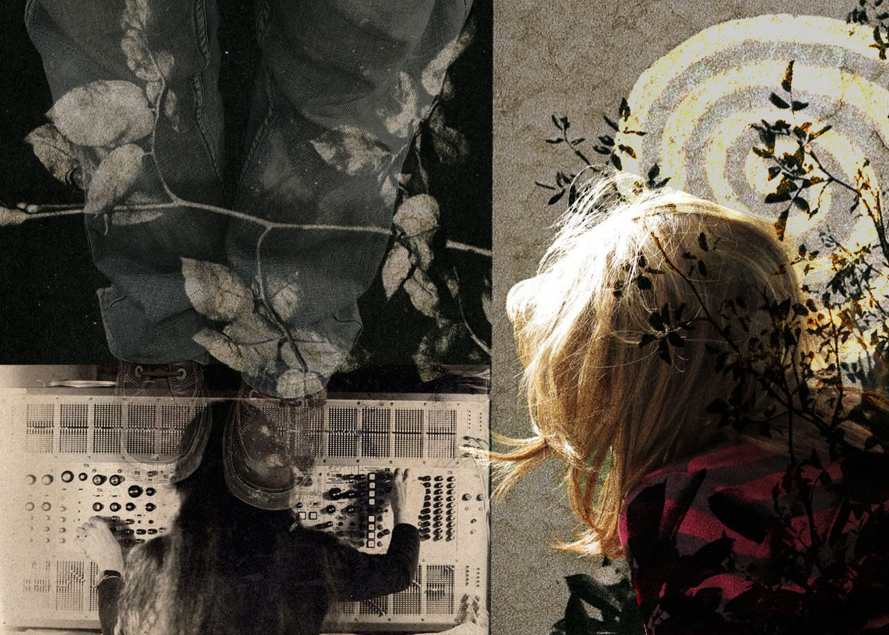

My Photomontage:

My photomontage is a piece that criticizes media illiteracy and the growing phenomenon amongst the current generation’s involvement in the work force. My aim was to capture our dependency on electronics and how society has been shaped by outlets of social media. The young adults who are currently in the workforce are the same individuals that were exposed to addictive social apps and victims to the negative effects of social media. Studies show that attention span and literacy rates have gone down when comparing recent generations to more older ones. While making my photomontage, I was interested in capturing the essence of technology and how it has shaped the way we think. Phone usage has drastically changed younger minds and completely taken over the development of schoolkids. For example, I don’t remember having the biggest dependency on my cell phone when I was in middle school. Instead, I went outside and enjoyed being present in moments rather than always subconsciously multitasking by being on my phone. Studies show that middle schoolers today are diving into social media apps and involving themselves online at very young ages. There is little concern for this although cell phones strip away attention span. The focus that young kids have on these apps should be redirected to more holistic things. I used blending and masking to incorporate all of my ideas. Some images are mine and the others are from the internet. I was interested in using photos of nature to balance the idea of social media and getting back to the roots of life.